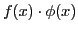
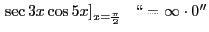
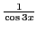
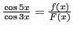
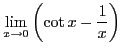
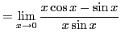
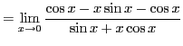
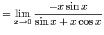
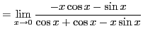
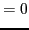

Next: Evaluation of the indeterminate Up: Theorem of mean value; Previous: Evaluation of the indeterminate Contents Index
If a function
 takes on the indeterminate form
 for
for  , we write the given function
, we write the given function
Solution. . Therefore, this is an indeterminate form. Substituting  for , the function becomes .
|  |  | |
|  | ||
|  | ||
|  | ||
|  |
Here is the SAGE command for this example:
[fontsize=\scriptsize,fontfamily=courier,fontshape=tt,frame=single,label=\sage] sage: limit(cot(x)-1/x,x=0) 0 sage: limit((- x*cos(x) - sin(x) )/(cos(x) + cos(x) - x*sin(x)),x=0) 0
david joyner 2008-08-11